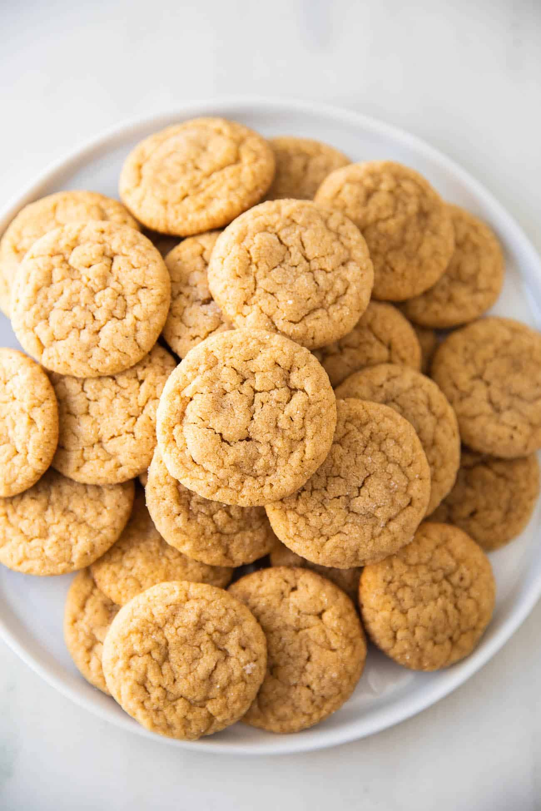

Peanut Butter Cookies

Description
These gluten-free, vegetarian cookies are simple to make and will leave you coming back for more.
Ingredients
- 1 Cup Peanut Butter
- 1 Cup Sugar
- 1 Egg
- 1 Tsp Vanilla Extract
- 1 Tsp Baking Powder
Directions
- Preheat oven to 350°.
- Combine all ingredients in a bowl and mix well.
- Form two-inch cookie-dough balls.
- Place one inch apart on a baking sheet.
- Bake for nine minutes or until golden brown.
- Let sit until fully cooled.